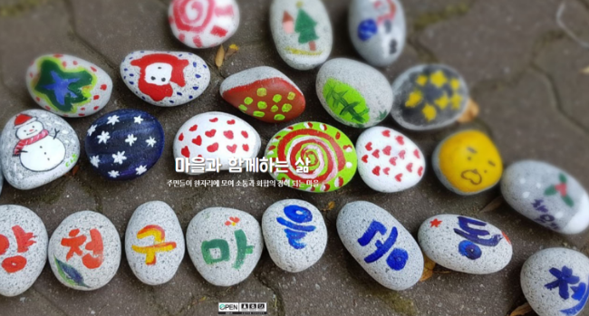
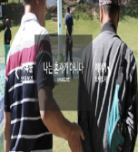
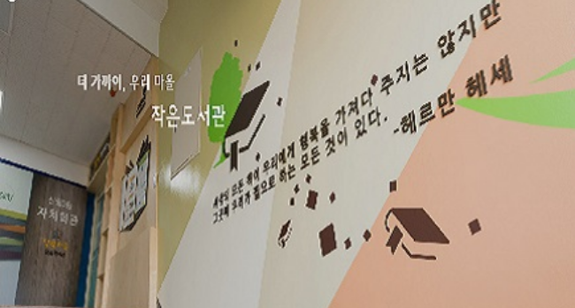

총 12개
역사 3
양천구·목동의 개청과 도시 형성, 메타버스로 보는 옛 목동까지
지역 3
양천공원·신월7동·목동 — 양천구를 이루는 거점 공간들의 기록
마을 4
마을 단위 활동과 기록, 메타버스 전시까지 구민기록활동가들의 결과물

마을과 함께하는 삶
양천구 주민들은 각 마을의 특성과 문화가 반영된 축제를 진행하고, 양천구는 주민들이 재능 및 역량을 펼칠 수 있도록 지원하는 과정을 확인할 수 있습니다.
바로가기
일상 2
주민의 삶에 가까운 공동체와 도서관

나는 혼자가 아니다
양천구청이 2017년부터 민관의 다양한 주체들과 협력을 통하여 진행한 나비남 프로젝트의 이야기를 담았습니다. 프로젝트 진행과정의 기록물을 포함하여 현장에서 노력한 참여자들의 인터뷰를 확인할 수 있습니다.
바로가기

더 가까이, 우리 마을 작은 도서관
양천구는 마을 곳곳에 작은도서관이 있습니다. 작은도서관은 보드게임, 음악, 북카페 등 각자 특화 분야에 따라 다양한 프로그램을 운영하고 있습니다. 주민들 가까이 작은도서관이 다가온 과정을 기록물을 통해 확인할 수 있습니다.
바로가기